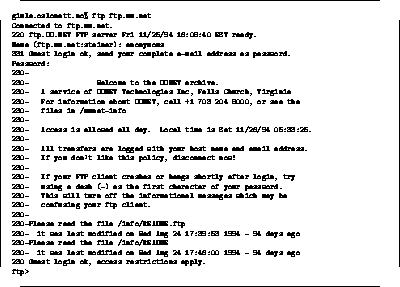

Elektronisk post og filoverførsel var de to første tjenestene som dukket opp, og er sammen med News fortsatt blandt de mest brukte, målt i generert trafikk på nettet.
Internettets filoverføringssystem kalles FTP - File Transfer Protocol, og FTP-programmene kan altså brukes for å flytte filer i begge retninger mellom to vilkårlige maskiner på Internettet.
Personen som starter filoverførselsprogrammet må da selvsagt sitte på en maskin på Internettet, og på maskinen man kopler seg opp mot må vedkommende enten ha en personlig konto eller bruke den såkalte ``anonymous ftp'' mekanismen.
Konvensjonen for bruk av denne mekanismen er at man logger seg inn med navnet anonymous og oppgir sin email adresse som passord. I figur 6 skrev jeg derfor steinar@oslonett.no når maskinen spør etter passord.

I eksempelet i figur 6 har vi koplet oss opp mot et av de største anonymous ftp arkivene i verden, ved UUNET i Virgina.
Det som ligger i slike arkiv, er vanligvis gratisprogramvare, dokumentasjon, rapporter, informasjon om organisasjonen som driver arkivet osv. Nesten alle litt store organisasjoner som er tilkoplet Internet vil drive et åpent FTP arkiv, da dette er en meget effektiv måte og legge ut informasjon på til kunder og samarbeidspartnere og andre interesserte. Se f.eks. på FTP arkivet til Microsoft og Novell.